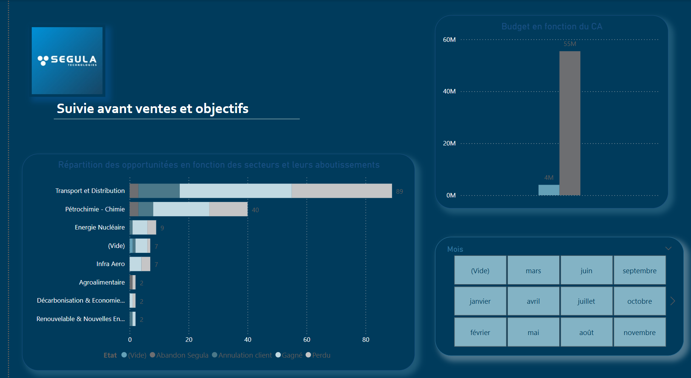

Projet principal - Création d'un outils d'analyse des données commerciales
Dans un but de compréhension et manipulation des bases de données pour mieux gérer les offres futures, et faire de meilleiurs prédiction.
J’ai mis en place un pipeline Power BI (Power Query + DAX), conçu des KPI, et automatisé la visualisation des données commerciales. Rôle : collecte, modélisation, restitution. Collaboration : avant-vente et direction commerciale.
Voir le projetProjet IA Roboflow
Automatisation de l’annotation de plans techniques grâce à l’IA.
Entraînement d’un modèle YOLO pour détecter des symboles électriques sur des folios (Total Montoir). Rôle : annotation, entraînement, analyse d’erreurs et itérations.
Voir le projet